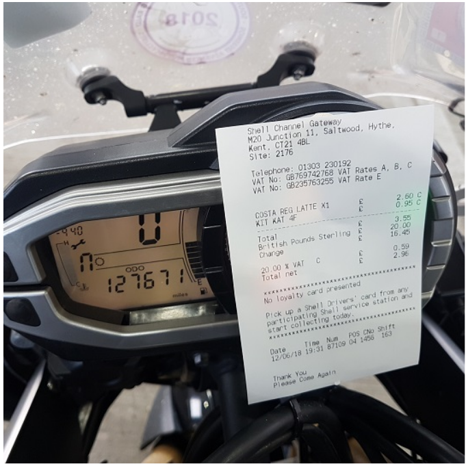

Rider Guidance

Although the following protocols apply to all IBA UK rides, this guidance
is aimed at riders undertaking the entry level rides, so as to ensure a
successful first ride. Entry level rides to the IBA UK will normally be
either SaddleSore 1000 or SaddleSore 1600K.
You may complete any ride two-up with one person doing all the piloting,
the other being a pillion the entire distance - you may not share piloting
duties! In these cases, the Iron Butt Association issues two certificates,
one for the rider and one for the pillion. There is no additional charge
for a pillion but if they would like a pin badge or plate frame, you will
need to include that with the fee after verification.
1. Plan a safe route
-
A safe ride should be your primary goal. If this is your first attempt
at a 1000 mile day, we highly recommend that you study the Iron Butt
Association's long distance riding tips in the "Archive of Wisdom"
currently located at
https://ironbutt.org/25tips.html
and our own
First UK Iron Butt Ride.
-
Since safety is our primary concern, no pre-registration of your ride is
needed. Our goal is to give you maximum flexibility to decide on any
given day whether the combination of weather, your motorcycle and, most
importantly, your attitude, are ready for a big ride. We also feel this
removes the pressure to complete the ride should you become tired or
otherwise feel unsafe.
-
IMPORTANT NOTE: Unless your speedometer has been calibrated, do NOT
depend on your own odometer readings for official mileage! Many perhaps
most motorcycles register at least 4% more miles than actually
travelled. Over the course of a 24 hour period, this error can be quite
severe - as much as 40 miles. In all cases, mileage will be verified
using one or more standard route-mapping programs such as Garmin
BaseCamp, Google Maps, etc.
-
We strongly discourage, and in some cases may reject, routes which are
repetitive in nature. For example, we would not accept a claim that you
rode from Leeds to Leicester and back (about 200 miles) five times. If
you choose a circular route, you will need to obtain a dated receipt at
each "corner", i.e. change of direction, to show that you did not take a
short-cut. For example, if you choose to ride the circular route of
London, Newcastle, Glasgow, Cardiff, London we would expect to receive
receipts from each of those locations.
-
If you choose a route where you ride 500 miles and then turn around and
come back, you must get a dated receipt at the turn-around point. For
example, if you were to start in Dover and ride to John O'Groats and
back to Dover, we would expect a detailed receipt from John O'Groats.
The "End to End Club" stamps available at John O'Groats and Land's End
are not acceptable as substitutes for the dated receipts.
-
If your route includes any toll roads/bridges, where possible try and
obtain a receipt from either the beginning or the end of the toll
section and log it along with your other receipts.
-
Motorcycling comes with risk and riding 1,000 miles or more increases
your risk substantially. It is imperative you understand the risk you
are taking and minimize the possibility of an accident by practising
safe motorcycle habits. No one, not even the most experienced long
distance rider, can safely fight off fatigue. If you are tired, the only
option is to stop and rest. Ignoring the symptoms of fatigue can be
fatal. The SaddleSore rides enjoy a fantastic safety record but to
continue this record requires you to do your part. If you are tired,
having a bad day, or facing other hurdles which are impacting your
riding skills, please stop and rest so that you may enjoy motorcycling
another day!
-
While group SaddleSore rides bring with them the safety of group travel,
they can also increase your risk by encouraging you to press on when you
might otherwise stop. Group rides can also encourage aggressive riding.
Be sure riding styles of others in your group match your style. When
planning a ride, keep in mind that group rides are only as fast as the
slowest person in the group. This can extend your riding day many hours
pushing you towards fatigue.
-
Please remember that the Iron Butt Association is dedicated to the sport
of safe, long-distance motorcycle riding. It does not condone, nor will
it tolerate, unsafe activities such as excessive speed, reckless
motorcycle operation, riding while fatigued or otherwise impaired, the
use of stimulants to maintain alertness, or any other activity that
results in riders exceeding their personal limits. In many countries,
riding more than 20 miles per hour above the speed limit may also get
you charged with dangerous driving. Dangerous driving is a serious
charge in any jurisdiction. Few experiences in motorcycling are more
memorable than an appearance in traffic court, particularly if your
license hangs on the outcome.
-
Any rider found to have engaged in, or claiming to have engaged in,
these or other unsafe activities, as determined at the sole discretion
of the IBA, will have their certification refused. If the certification
is already issued and we find out about these infractions after the
fact, the certification will be revoked.
-
Please keep in mind that the time stated for your chosen ride is wall
time, not riding time. So, for example with SS1000 (24 hours), if you
start your ride at 5:00 pm on June 1st, you must finish it before 5.00
pm on June 2nd.
-
If you are attempting a ride exceeding 1000 miles in 24 hours and you
miss the 24 hour deadline, but have achieved 1000 miles before
abandoning the longer ride, it is still possible to submit that 1000
mile distance as a SaddleSore 1000.
2. Document start & finish
-
IBAUK requires that you document your ride with receipts and
photographs. The photos must show BOTH the receipt AND your bike's
odometer (mileage) reading IN THE SAME PHOTO. Receipts and odo readings
must be legible.
-
If a pillion is on the ride with you, please make sure they are recorded
on the documentation. (Ride Documentation 1b 2, 3)

To be clear about the odo/receipt photo, this is a good example. Note
that:-
- Bike's live odometer is visible
- Receipt has site location visible
- Receipt has date/time visible
3. Collect and track receipts
-
The start and end times of your ride are determined by computer printed
receipts which clearly show the date, time and location. This can be a
fuel receipt, an ATM receipt, or any other computer printed receipt
which clearly states all this information. Please note that some ATMs do
not print the location. Please check because any receipt without a
location is not acceptable.
-
The time on the computer printed fuel receipt or the ATM receipt will
be your only official start time.
Witness statements alone will not be accepted as a substitute.
-
Although a clear date and time are most important for your start and end
receipts, they are much less critical on the other ride receipts. We
know there are mistakes on many petrol station clocks - spend your time
concentrating on the start and end receipts.
-
Be aware that many fuel stations in Europe are printing an "invoice
number" which is actually the time of the transaction e.g. you might see
Inv# 113557 which means 11:35:57 am.
-
The mapping programs used by the verifiers may not always recognise
addresses and postcodes printed on receipts obtained in continental
Europe. Please help the verifiers by writing a note on the receipt
giving approximate location, e.g. "On E34 2 miles south of J30, near
Herford".
-
A log entry (Ride Documentation 4), must be made at each stop. A receipt
must accompany each log entry other than rest stops.
-
Log entries should be numbered in chronological order, with the starting
time receipt at number 1, and include the date, time, location (e.g.
London) and odometer reading.
-
The following log entries are mandatory:-
-
Stops Receipts from fuel & other stops, where
possible, should include a printed date. Time stamps on receipts
other than start and finish receipts are not critical so do not
waste time worrying about them. WARNING: If your motorcycle is
equipped with a large fuel-tank, please note that you must stop at
least once every 350 miles anyway (this is purely for documentation
for your ride). Although we know it is possible to ride greater
distances non-stop, we will not accept a claim of this type.
-
Rest stops over 30 minutes: In order for the
verification team to account for your time, log entries must be made
at each stop longer than 30 minutes, whether that is for a short nap
at a roadside rest area, or longer in a hotel room. Some stops, e.g.
a stop in a rest area, will not generate any kind of receipt - this
is acceptable, but please account for the time in your trip log by
including the approximate length of the stop or the start time and
ending time.
-
Meal breaks taking longer than 30 minutes are also
considered to be rest stops. Where possible obtain a computer
printed receipt from a restaurant.
-
At the end of your ride, before the time period is up, obtain a
computer printed fuel, ATM receipt or other computer printed receipt
with a legible location, date and time stamp.
The time on this receipt will be your only official finish
time.
4. Prepare, copy and submit your documentation
-
Please ensure you use the correct Ride Documentation, as downloaded from
the IBA UK website. This is different from the USA equivalent which is
found on other websites
-
The onus is on the rider to present the evidence that they have
completed the ride within the rules. This will be achieved as follows:
-
Find a map (an old, or photocopied one is acceptable) or print one from
the internet and circle your start and end points and the locations you
stopped in for fuel/food/etc. This map is to assist the person verifying
the routes and is meant to give a good overall picture of your ride. You
do not actually have to find the small towns you stopped in, just circle
the approximate area. The best map is one that shows your route on one
or two pages. Please do not send in multi-page route sheets from mapping
programs or an Auto club because they are too hard for the verification
team to get a good overview of your ride.
-
COPY your receipts and number the copies to correspond to your trip log.
-
COPY your log.
Always retain your original documentation and submit only
copies.
-
If you have used a satellite tracker e.g. SPOT, Bubbler GPS, etc, you
may also submit the associated Spotwalla link (but NOT the print-out) as
supporting evidence.
-
If needed, write a short note about any problems with your ride on Ride
Documentation 5. For example, "The receipt from Birch Services does not
have the correct date. I had the attendant write the correct date. The
station's number is 01706 123 1234"
-
We strongly caution that out on the road it may not be possible to
follow these guidelines to the letter. If that happens, please explain
any problem you encountered and we will do our best to work out a
solution. For example, 23 hours and 35 minutes into his 24 hour ride,
one person could not find a petrol station with a computer printed
receipt (obviously, our favourite type), so he got some local people to
witness the time he arrived. His other documents clearly supported his
claim of riding the distance in the time-frame he claimed so we did not
hesitate to process his award.
-
Complete Ride Documentation 1a (and 1b if you have a pillion). This
information tells us where to send the awards, the name and motorcycle
you would like on the certificate and the basic route you would like the
award to note.
-
Complete the Rider Declaration (Ride Documentation 6). No Fee is due at
this stage.
-
Finally, send it to:-
IBA UK,
Darryll Kirk
95 Wymeswold Road
Hoton
Loughborough LE12 5SN
Or e-mail scanned documents to
verifications@ironbutt.co.uk
You will receive confirmation of your documentation being received.
When we get your ride documentation, one of several people will start the
verification process. Due to the extensive work involved (keying data into
mileage spreadsheets, map verifications, witness contacts where needed and
custom certificate preparations) and the fact that 100% of the labour
involved with producing these awards is performed by volunteers, it will
usually take a minimum of 1 month before your certificates will be ready
for signature and mailed to you. We realise this is a long time to wait
for your certification but our certification process is very thorough. In
fact, the entire certification process is what gives your certificate its
value. It would be very easy for the Iron Butt Association to simply take
your money and print up, for example, a generic "you rode a 1,000 mile
day" certificate. However, the value of the entire certification program
is in the fact that not just anyone can get an Iron Butt Association ride
certificate. The downside is that this process takes time. We can only
offer that when you receive your certificate you know not only that you
earned it, but so did any other rider that you meet with the same
certificate. Before we can issue your certificate, you may be asked to
clarify certain aspects of your ride and/or documentation by either
e-mail, phone or letter. Additionally, certain aspects of your ride may be
subject to audit by yet another set of IBA volunteers charged with
ensuring only people who rode the miles get the award. Should your package
get tagged for that audit, it may delay your claim for the award.
The protocols explained in this document are the only ones against which
IBA UK rides are assessed. Failure to comply with them may result in your
ride being rejected, so make sure you are 100% certain you understand the
rules and the guidance before you start your ride. If you have any
questions about any aspect of your proposed ride we will help you. Please
e-mail to
verifications@ironbutt.co.uk
for any clarification.
We want you to succeed.
Iron Butt Association UK